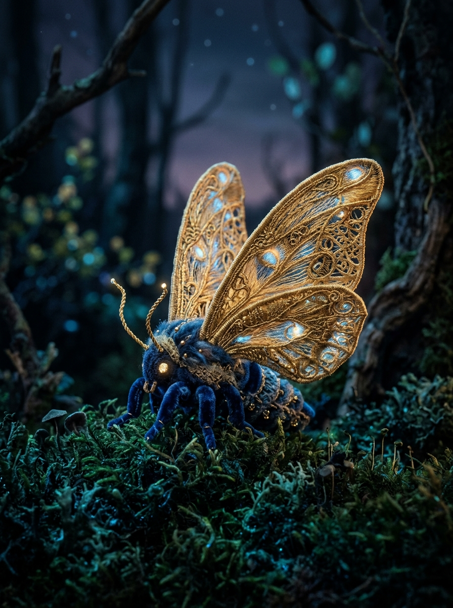
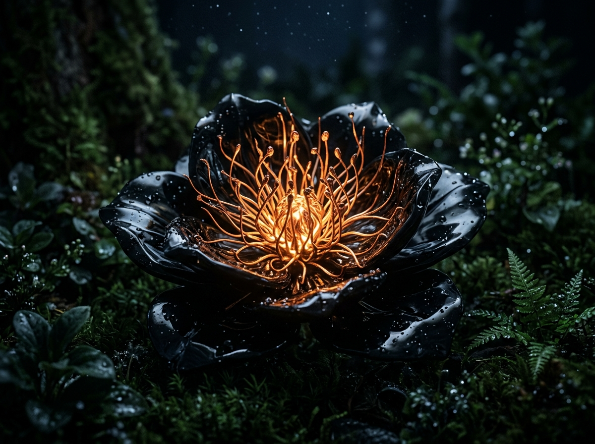
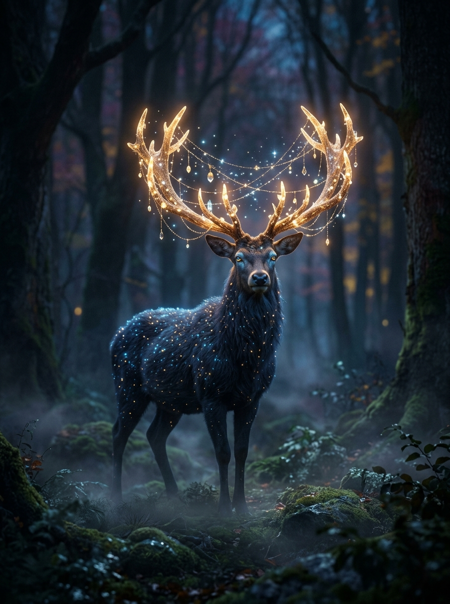

Valley of the Spun Hills
ELEVATION: 1,420M • SECTOR 04-G
ELEVATION: 1,420M • SECTOR 04-G
“Woven from dormant threads of golden twilight & living hillside fleece.”
— Floria Expeditions Log, Vol. IXWhere each cobblestone staircase is hand-stitched into the living earth.
Gently exhaling warm spice plumes across the knit pastures at dusk.

Hand-stitched into living hillside earth.
Reflects the eternal twilight sky of Realm 01.
Exhales warm cinnamon plumes each dusk.
An uncharted haven woven entirely in light, yarn, and twilight memories.
Beyond the charted perimeter lies a living tapestry of sentient botanicals, celestial wanderers, and tactile dwellings hand-stitched into the earth. Each entity resonates with forgotten harmonics—preserved in this open field journal for curious explorers.

Spins luminous filaments from dormant twilight pollen to stitch boundary sanctuaries across the deep velvet moss canopy.

Carved of volcanic glass petals, uncoiling once every century at the winter solstice to exhale warm copper embers into the frost.
A gentle mountain haven where cobblestones, fences, and thatched roofs are hand-stitched into the hillside, sheltering 42 elder weavers under perpetual twilight.

An ethereal wanderer whose crystalline antler crown gathers cosmic starlight, quietly guiding lost explorers across the misted glacial hollows.

Master of the codex, charting secret hollows with aromatic cinnamon pipe-smoke, curious tales, and hand-bound parchment scrolls.